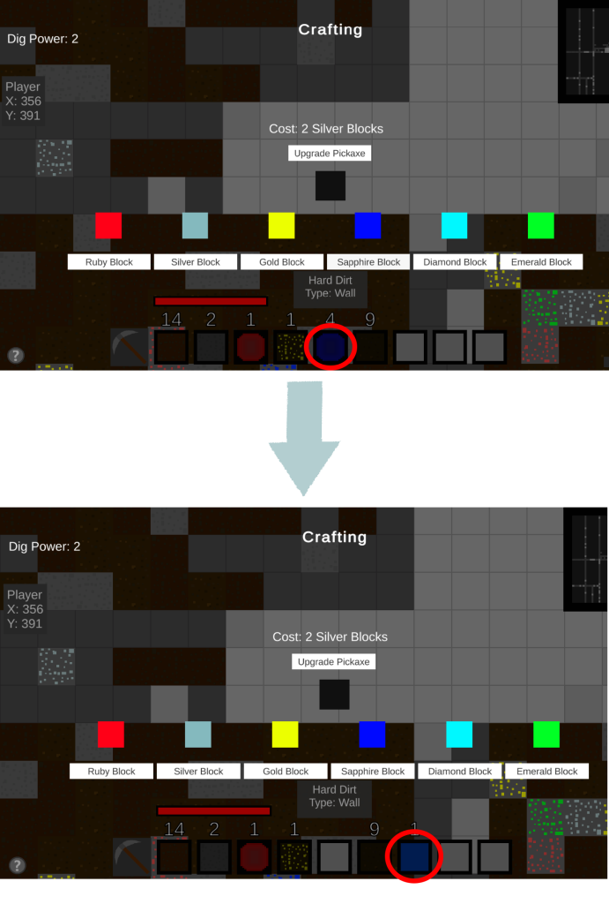

Crafting
When I finished making the generators my next aim was to make the dungeon feel more alive.
So this influenced my decision to implement a crafting system to give the blocks more of a purpose.
Ingredients
By using the custom tiles I was able to add a drop functionality to each of the blocks.
With this I made some of the blocks drop certain items for example diamond ore dropping diamonds.
These items act as the ingredients to the crafting system.
Recipes
Each recipe has an item assigned to it each item has an amount needed to craft the recipe and the item that is needed.
Building
To build an item you need to have all of the recipe components and enough space within the inventory.
Crafting
To craft an item make sure you have enough ingredients to make the block. The blocks can be used to upgrade your dig damage.
